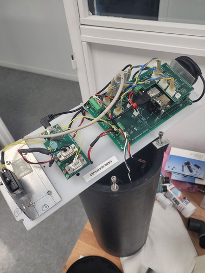

Mes Compétences
COMPETENCE CONCEVOIR: Concevoir la partie GEII d'un système
Niveaux
Niveau 1: Mener une conception partie intégrant une démarche projet
✔️AC11.01 | Produire une analyse fonctionnelle d'un système simple
✔️AC11.02 | Réaliser un prototype pour des solutions techniques matériel et/ou logiciel
✔️AC11.03 | Réaliser un dossier de fabrication à partir d'un dossier de conception
Nous avons réalisé une analyse fonctionnelle de notre système dans le cadre du projet "Régulateur de température" au cours du troisième semestre. De plus, nous avons conçu un prototype de ce régulateur et rédigé un dossier de conception exhaustif.
Niveau 2: Concevoir un système en fiabilisant les solutions proposées
✔️AC21.01 | Proposer des solutions techniques liées à l'analyse fonctionnelle
✔️AC21.02 | Dérisquer les solutions techniques retenues
Pendant mon alternance chez Nortekmed, j'ai eu l'occasion de proposer des solutions concrètes en détaillant les avantages et les inconvénients de chacune pour la mise en œuvre du projet.
Niveau 3: Concevoir un système en adoptant une approche sélective dans ses choix technologiques
✔️AC31.01 | Contribuer à la rédaction d’un cahier des charges
✔️AC31.02 | Prouver la pertinence de ses choix technologiques
✔️AC31.03 | Rédiger un dossier de conception
Ces trois apprentissages ont été validés lors de projets tels que le simulateur de vagues pour la société Nortekmed, où j'ai participé à l'élaboration et à la rédaction d'un cahier des charges pour le projet, en réalisant des recherches approfondies pour justifier mes propositions technologiques.
COMPETENCE VERIFIER: Vérifier la partie GEII d'un système
Niveaux
Niveau 1: Effectuer les tests et mesures nécessaires à une vérification d'un système
✔️AC12.01 | Appliquer une procédure d’essais
✔️AC12.02 | Identifier un dysfonctionnement
✔️AC12.03 | Décrire un dysfonctionnement
Ces apprentissages entrent en adéquation avec les taches que j'effectue pour chaque opération de maintenance pour les equipements médicaux de Compumedics.
Niveau 2: Mettre en place un protocole de tests pour valider le fonctionnement d'un système
✔️AC22.01 | Identifier les tests et mesures à mettre en place pour valider le fonctionnement d’un système
✔️AC22.02 | Certifier le fonctionnement d’un nouvel équipement industriel
J'ai eu la responsabilité de câbler une armoire électrique qui alimente un automate qui trie des pièces. Ce projet ma permis de mettre en évidence mes compétences en habilitation électrique par exemple.
Niveau 3: Elaborer une procédure intégrant une démarche qualité pour valider le fonctionnement d'un système
✔️AC32.01 | Evaluer la cause racine d’un dysfonctionnement
Compétence acquise lors de test réalisé sur le capteur Aquadopp 2MHZ ne renvoyant plus de trames indiquant un fonctionnement du dispositif pour les mesures de houle. Le dysfonctionnement était dû à un court-circuit au niveau du composant électronique gérant la liaison série pour le renvoi de tram. Court circuit dû à un mauvais branchement des fils.
.jpg)
✔️AC32.02 | Proposer une solution corrective à un dysfonctionnement
✔️AC32.03 | Produire une procédure d’essais pour valider la conformité d’un système
COMPETENCE MAINTENIR: Assurer le maintien en condition opérationnelle d'un système
Niveaux
Niveau 1: Intervenir sur un système pour effectuer une opération de maintenance
✔️AC23.01 | Exécuter l’entretien et le contrôle d’un système en respectant une procédure
✔️AC23.02 | Exécuter une opération de maintenance (corrective, préventive, améliorative)
✔️AC23.03 | Diagnostiquer un dysfonctionnement dans un système
✔️AC23.04 | Identifier la cause racine du dysfonctionnement
J'ai valider ces apprentissages au cours des differentes reparations et operations de maintenance.
Niveau 2: Mettre en place une stratégie de maintenance pour garantir un fonctionnement optimal
✔️AC33.01 | Proposer une solution de maintenance
⌛AC33.02 | Évaluer les coûts d’indisponibilité et de maintenance d’un système
✔️AC33.03 | Produire une procédure de maintenance
AC33.04 | Proposer un appui technique aux différents acteurs à l'échelle nationale et internationaleCOMPETENCE INTEGRER: Intégrer un système de commande et de contrôle dans un procédé industriel
Niveaux
Niveau 1: Procéder à une installation ou à une mise en service en suivant un protocole
✔️AC24.01AII | Appliquer la procédure d’installation d’un système
✔️AC24.02AII | Exécuter la mise en service d’un système en respectant la procédure
Des compétences acquises lors de projets scolaires comme celui du Variateur V90 avec lisaion Profinet en semestre 5 ou encore le projet tapis automatisé avec trie de pieces par couleur.
Niveau 2: Interagir avec les différents acteurs, depuis l’élaboration du protocole jusqu’à l’installation, dans une visée de démarche qualité
✔️AC34.01AII | Planifier l’installation et la mise en service d’un nouvel équipement
Compétence acquise en entreprise lors de la configuration de différents capteurs ( la sonde C4-3 pour la salinité et l’aquadopp pour les courants) le GPS et sur le modem pour la bouée Alizée en destination de Lomé au Togo.

✔️AC34.02AII | Produire une procédure d’installation et de mise en service d’un système
✔️AC34.03AII | Produire le dossier de conformité du système en gérant le versionnage
Des compétences acquises lors dU projet scolaire visant a contrôler le démarreur moteur IO Link (commande / retour d’informations) via un coupleur en PN.
Quelques projets scolaires
Projet Mutimètre
Mon premier projet consistait a concevoir et programmer un multimètre mesurant la tension l'intensité d'un courant et la résistance. J'ai donc appris souder des éléments électroniques sur une carte et a les configurer dans un but précis et aussi appris les bases de l'Arduino.
Projet Robot tennis
Dans le cadre de notre projet, nous avons réussi à concevoir et programmer un robot capable d'attraper une balle et de la relancer tout en s'orientant efficacement et en évitant les obstacles. Mon rôle principal au sein de ce projet a été de m'occuper de la partie magnétomètre. Le magnétomètre, un capteur essentiel pour la navigation du robot, permet de déterminer son orientation en mesurant les champs magnétiques environnants. En utilisant ce capteur, j'ai pu implémenter un système de navigation précis, aidant le robot à s'orienter correctement dans son environnement. J'ai également travaillé sur l'intégration du magnétomètre avec les autres capteurs du robot, assurant une coordination optimale pour éviter les obstacles tout en maintenant une trajectoire correcte vers la balle. Ce projet m'a permis de faire de la programmation sur Arduino, renforçant ainsi mes compétences techniques. De plus, il m'a appris les avantages et les inconvénients de travailler en équipe, notamment en termes de communication, de coordination des tâches et de gestion des différentes compétences au sein du groupe.
Projet Piano
Il s'agissait de configurer l’automate et de réaliser une partition de piano grâce à l’automate. Des électro-aimants sont utilisés pour actionner une touche lors de leur activation. Le rail à disposition sera utilisé pour positionner les électro-aimants au-dessus des touches blanches et noires. Ce projet m'a permis de programmer avec Unity Pro et d'utiliser les langages SFC et GRAFCET. En particulier, j'ai pu configurer l'automate en utilisant Unity Pro, un logiciel puissant pour la programmation d'automates programmables industriels (API). J'ai également appris à modéliser et à concevoir des séquences de commande en utilisant les langages SFC (Sequential Function Chart) et GRAFCET (Graphe Fonctionnel de Commande Étape/Transition), qui sont essentiels pour structurer les opérations d'automatisation de manière claire et efficace. Grâce à ce projet, j'ai acquis une compréhension approfondie de la manière de configurer et de programmer des automates pour des applications pratiques, tout en renforçant mes compétences en programmation et en automatisation industrielle.
Contact
Vous pouvez me contacter à l'adresse suivante : chadareharold13@gmail.com